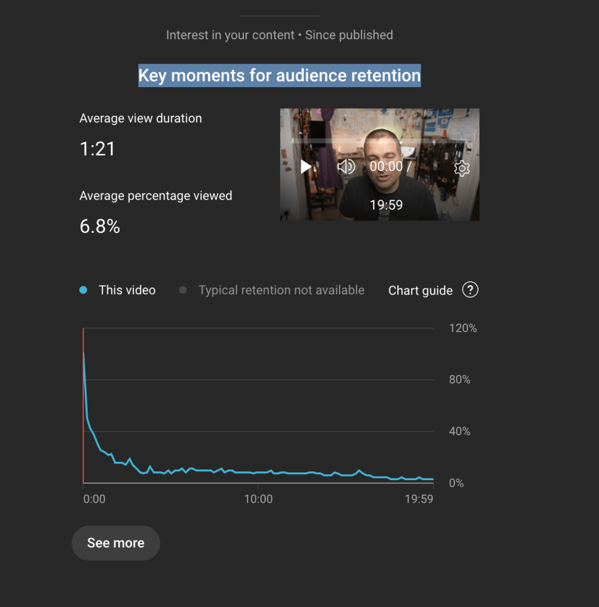
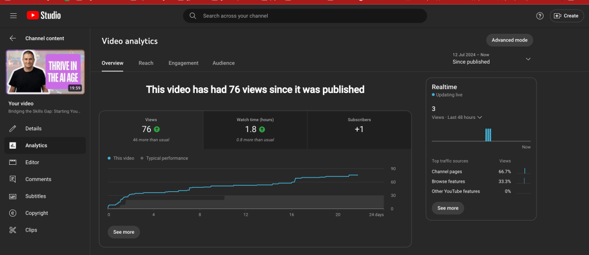
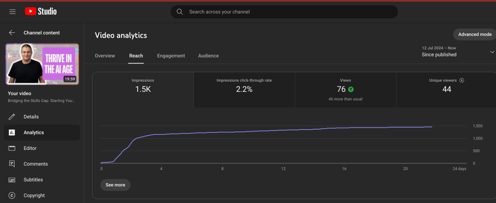
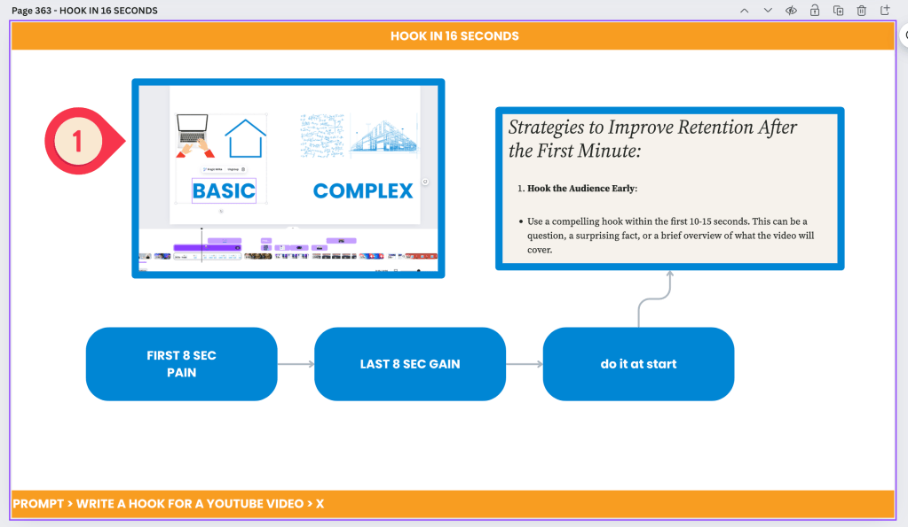
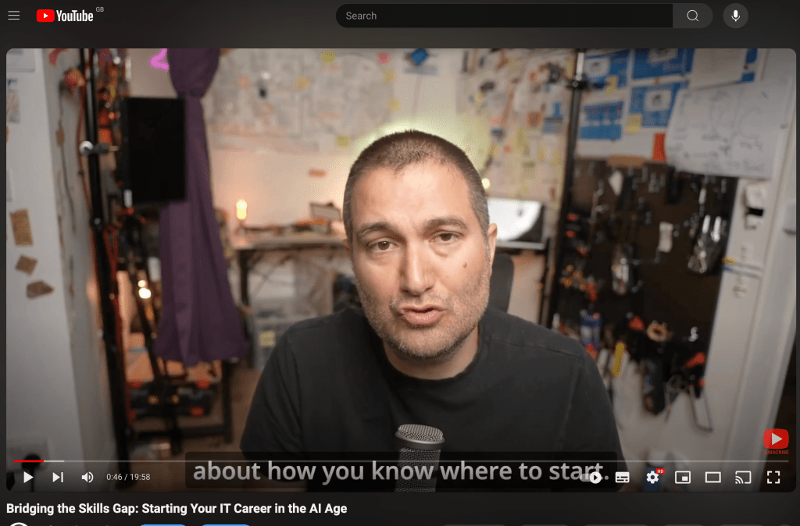
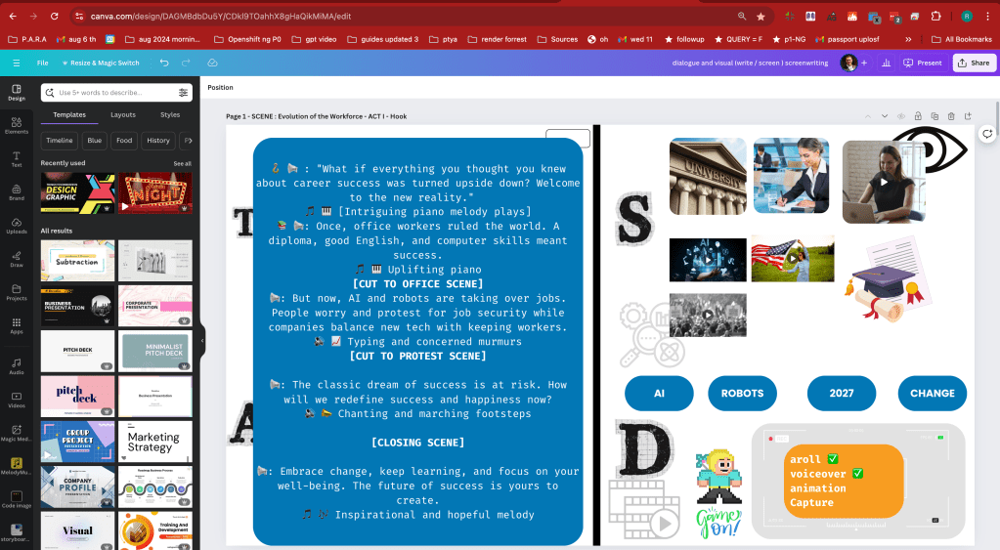
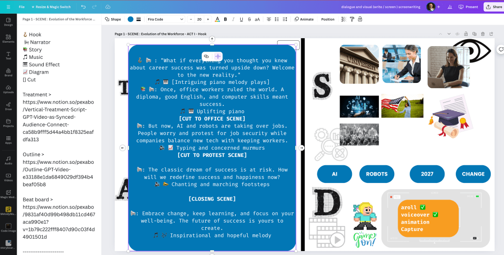

Last video Analysis for Retention
Audience retention is a critical metric for assessing how well your content keeps viewers engaged. While the ideal retention rate can vary based on the type of content and platform, here are some general benchmarks and strategies for maintaining audience retention, particularly focusing on the percentage of viewers you should aim to retain after the first minute:
Benchmarks for Audience Retention:
-
First 15-30 seconds:
-
Retain at least 70-80% of viewers. The initial moments are crucial for capturing attention.
-
After 1 minute:
-
Aim to retain at least 60-70% of viewers. This indicates that the majority of your audience finds the content engaging enough to continue watching.
-
Midway through the video:
-
Retain around 50-60% of viewers. Maintaining over half of your initial viewers at this point is a good sign.
-
End of the video:
-
Retain 40-50% of viewers. Higher retention towards the end signifies strong content quality and relevance.
Strategies to Improve Retention After the First Minute:
-
Hook the Audience Early:
-
Use a compelling hook within the first 10-15 seconds. This can be a question, a surprising fact, or a brief overview of what the video will cover.
-
Engaging Content:
-
Ensure that the content is engaging and valuable from the start. Address the viewer's pain points, interests, or questions directly.
-
High-Quality Production:
-
Invest in good production quality—clear audio, sharp visuals, and smooth editing. Poor quality can deter viewers quickly.
-
Pacing and Structure:
-
Keep a good pace. Avoid long-winded introductions or segments. Use a well-structured format to keep the content flowing and interesting.
-
Interactive Elements:
-
Include interactive elements like questions, calls to action, or even prompts to comment or share their thoughts.
-
Visual and Auditory Variety:
-
Use a mix of visuals, such as graphics, B-roll, and animations, along with varying your tone of voice and background music to maintain interest.
-
Preview Upcoming Content:
-
Tease what’s coming up later in the video to give viewers a reason to stick around.
-
Consistency and Branding:
-
Be consistent with your brand and style, which helps in building a loyal audience that knows what to expect from your content.
Conclusion:
For optimal audience retention, aim to keep at least 60-70% of viewers engaged after the first minute of your video. Regularly analyze retention analytics to understand where drop-offs occur and adjust your content strategy accordingly.
**Metrics **



Guide update move the hook to start

Too Late > 80 percent has dropped off

Fix the hook for the first sentence . add emojis

Writing Screen emojis

Imported from rifaterdemsahin.com · 2024